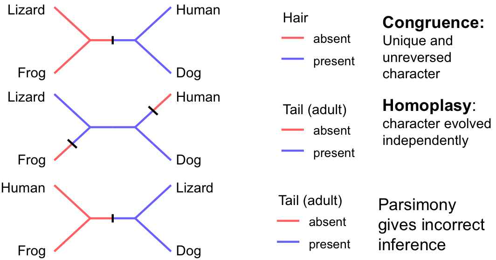
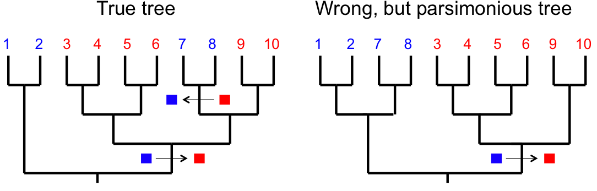
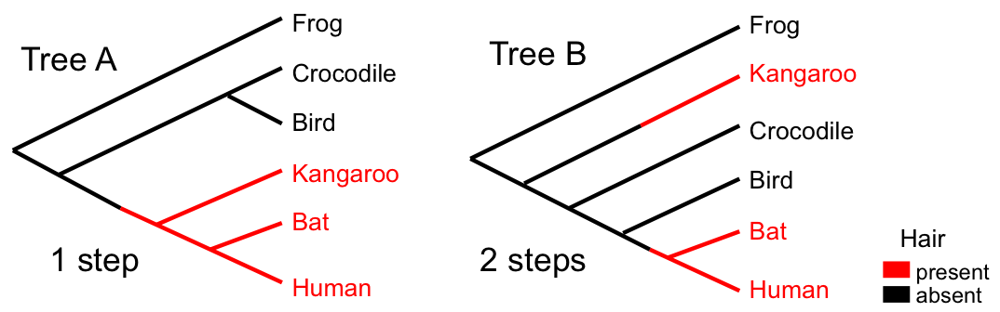
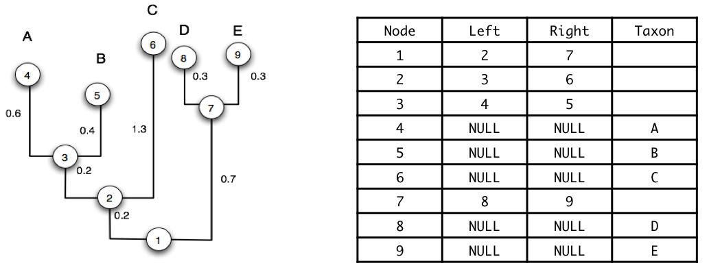
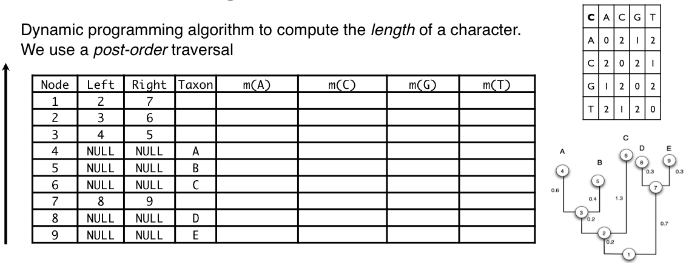
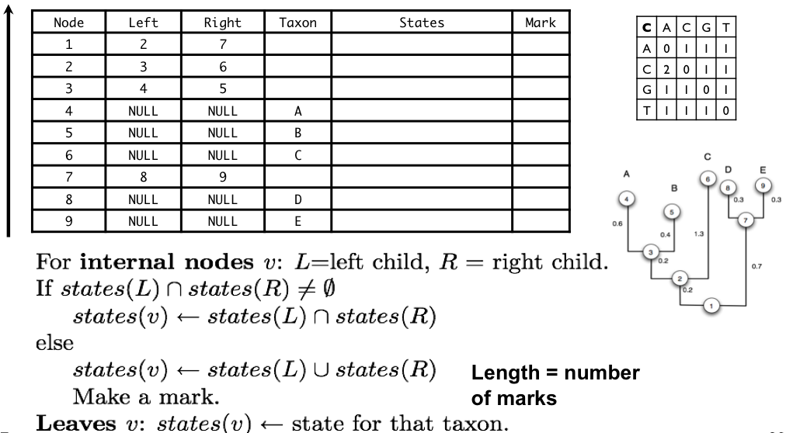

Characters
- An organism is comprised of a set of features.
- When organisms/taxa differ with respect to a feature (e.g. presence/absence of wings or a different nucleotide at a specific sites in a sequence) the different conditions are termed character states.
- The collection of character states (e.g. A, C, G, T) with respect to a feature constitute a character.
- Similarities and differences in character states provide the basis for inferring phylogeny (i.e. provide evidence of ancestral/evolutionary relationships).
When do characters support the correct tree?

Reversals
- If a character reverts to an ancestral state this can also affect phylogenetic inference.

Parsimony
- Key issue: how to separate homoplasy from congruence
- The parsimony criterion favors hypotheses that maximize
congruence and minimise homplasy
- Parsimony methods provide one way of choosing among alternative phylogenetic hypotheses
- It depends on the idea of the fit of a character to a tree
- Initially, we can define the fit of a character to a tree as the
minimum number of steps required to explain the observed distribution of character states at the tips.
- This is an optimization problem
- Characters differ in their fit to different trees
Parsimony

- Given a set of characters, such as aligned sequences, parsimony analysis works by determining the fit (minimum number of steps) of each character on a given tree.
- The sum over all characters is called the tree length.
- The most parsimonious trees (MPTs) have the minimum tree length.
Finding optimal trees
- Exhaustive tree search evaluates all possible trees
- Branch-and-bound
- Heuristic search is not guaranteed to find the optimal tree
- stepwise addition
- star decomposition
- branch swapping
- nearest neighbor interchange (NNI)
- subtree-pruning and regrafting (SPR)
- tree bisection and reconnection (TBR)
Heuristics
- The number of possible trees increases exponentially with the number of taxa making exhaustive searches impractical for many data sets (an NP complete problem)
- Heuristic methods are used to search tree space for most parsimonious trees by building or selecting an initial tree and swapping branches to search for better ones
- The trees found are not guaranteed to be the most parsimonious - they are best guesses
- General approach is starting tree + local search
- Starting tree constructed by adding one sequence at a time, perhaps with some searching in between additions
- More on this in later lectures
Representing trees

This table is in pre-order (parents before children). The opposite is post-order (parents after children).
You will need to know how to traverse a tree in pre- or post- order.
Computing the "length" of a character

Internal nodes (L = left child, R = right child):
$$\quad m[v,X]=\underset{Y}{\min}\{m[L,Y]+c(X,Y)\}+\underset{Z}{\min}\{m[R,Z]+c(X,Z)\}$$
Leaves:
$\quad m[v,X] =
\begin{cases}
0 & \mbox{if character state for $v$ is $X$}\\
\infty & \mbox{otherwise}
\end{cases}$
Complexity of calculating tree length for a single tree
- Given n taxa there are $2n − 1$ nodes in a rooted binary tree,
- If there are S possible character states (S = 4 for DNA) then
at each node we need to do $O(S^2)$ calculations
- If the sequence alignment is L long, then there are L
characters to consider.
$O(nS^{2}L)$ time
$O(nS)$ space
Special case: Fitch Parsimony

Parsimony summary
- The “small parsimony problem” is efficiently computed by dynamic programming on the tree
- The “large parsimony problem” requires computing the parsimony score on all trees - there is no efficient solution for this
- The maximum parsimony principle attempts to find the evolutionary tree that requires the least number of events to explain the data.
- It is not based on a model, and does not allow for the possibility that multiple substitutions may have occurred on a branch in the tree.